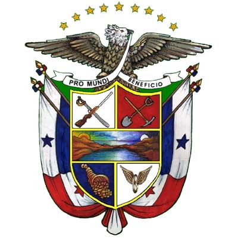
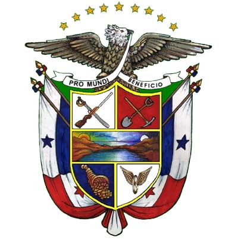
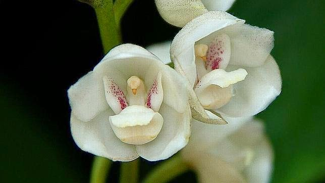
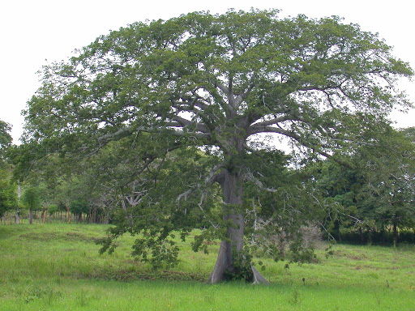
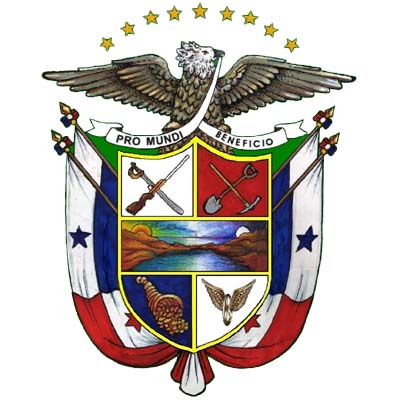

Símbolos Patrios
 




En el cuarto viaje de Cristóbal Colón, desembarcó en 1502 en el puerto natural de Portobelo, visitó el área occidental del istmo, a la que le puso por nombre Veragua, e intentó fundar en ella una colonia llamada Santa María de Belén, que al tiempo tuvo que ser abandonada. Las primeras expresiones revolucionarias se produjeron en 1819, cuando se instituyó en la capital el primer club patriótico en el país. En el año 1821 Panamá promulgó su independencia y se asoció a la República de la Gran Colombia. En 1830 al disolverse ésta, permaneció unida a Colombia, aunque existieron algunos intentos separadores, no fue hasta el 03 de noviembre de 1903 que se logró oficialmente la separación de este país. El valor y la importancia del istmo como un camino de paso entre el Pacífico y el Atlántico tomó gran valor con la colonización de Oregón y el descubrimiento en california de oro en el año 1848. La burguesía estadounidense edificó el ferrocarril panameño entre los años 1848 y 1855 y comenzó a interesarle la construcción de un canal transoceánico.

Ciudad de Panamá, Panamá